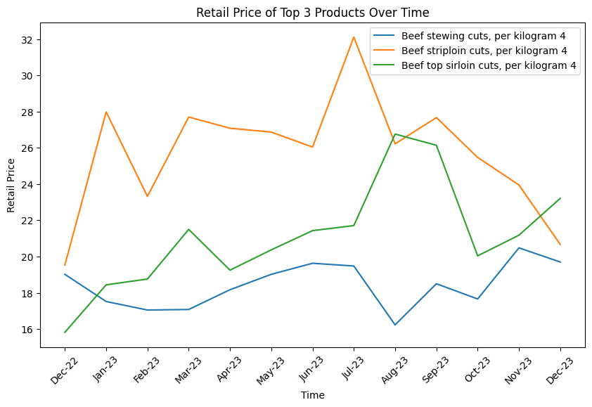
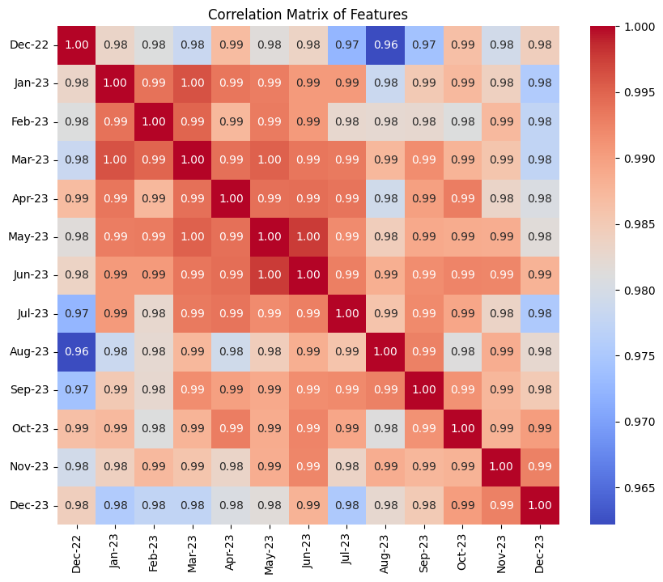
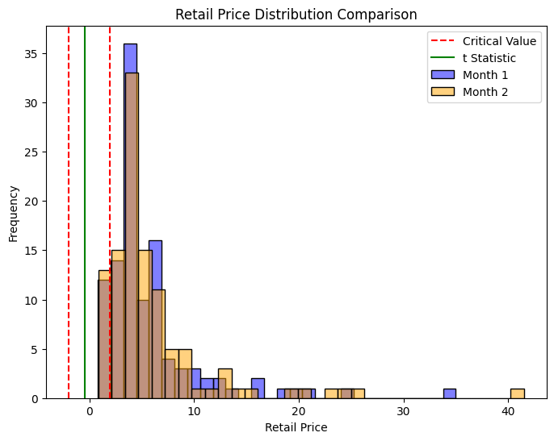
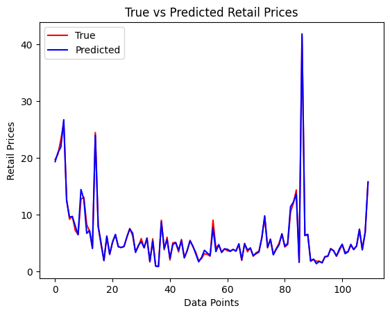

Name: junhao liu
The purpose of this project is to study how the retail prices of products change over time. Through this project, I attempt to provide the correlation between the retail prices of products across different months, and try to predict the retail prices for new months based on the prices from previous months.
I choose https://www150.statcan.gc.ca/t1/tbl1/en/tv.action?pid=1810024501 as the dataset. I would consider using Canadian data from December 2022 to December 2023.
I use pandas to read the data, to ensure the convenience of using the data, I processed the data into columns for product name and month.
import pandas as pd
import matplotlib.pyplot as plt
import seaborn as sns
import scipy.stats as stats
from sklearn.linear_model import LinearRegressiondata = pd.read_csv('data.csv', header=1)data = data.drop(0)data.iloc[:, 1:] = data.iloc[:, 1:].astype(float)data| Products | Dec-22 | Jan-23 | Feb-23 | Mar-23 | Apr-23 | May-23 | Jun-23 | Jul-23 | Aug-23 | Sep-23 | Oct-23 | Nov-23 | Dec-23 | |
|---|---|---|---|---|---|---|---|---|---|---|---|---|---|---|
| 1 | Beef stewing cuts, per kilogram 4 | 19.02 | 17.52 | 17.05 | 17.08 | 18.17 | 19.02 | 19.63 | 19.48 | 16.23 | 18.50 | 17.66 | 20.48 | 19.70 |
| 2 | Beef striploin cuts, per kilogram 4 | 19.53 | 27.98 | 23.32 | 27.70 | 27.08 | 26.87 | 26.04 | 32.11 | 26.22 | 27.67 | 25.47 | 23.95 | 20.67 |
| 3 | Beef top sirloin cuts, per kilogram 4 | 15.82 | 18.44 | 18.76 | 21.50 | 19.25 | 20.37 | 21.43 | 21.71 | 26.76 | 26.14 | 20.04 | 21.18 | 23.21 |
| 4 | Beef rib cuts, per kilogram 4 | 21.18 | 28.18 | 30.71 | 28.92 | 23.72 | 28.59 | 27.95 | 26.96 | 32.02 | 27.01 | 23.17 | 31.43 | 26.23 |
| 5 | Ground beef, per kilogram 4 | 10.92 | 10.64 | 9.92 | 10.31 | 11.12 | 11.23 | 11.50 | 11.19 | 11.45 | 11.69 | 11.82 | 11.72 | 12.71 |
| ... | ... | ... | ... | ... | ... | ... | ... | ... | ... | ... | ... | ... | ... | ... |
| 106 | Sunflower seeds, 400 grams 5 | 4.44 | 4.39 | 4.47 | 4.57 | 4.62 | 4.64 | 4.41 | 4.51 | 4.50 | 4.32 | 4.40 | 4.42 | 4.43 |
| 107 | Deodorant, 85 grams 5 | 6.79 | 6.79 | 6.76 | 7.03 | 7.43 | 7.40 | 7.41 | 7.31 | 7.26 | 7.40 | 7.17 | 7.25 | 7.44 |
| 108 | Toothpaste, 100 millilitres 5 | 3.8 | 3.50 | 3.77 | 3.77 | 3.72 | 3.84 | 3.74 | 3.87 | 3.69 | 3.84 | 3.65 | 3.82 | 3.86 |
| 109 | Shampoo, 400 millilitres 5 | 6.27 | 6.31 | 6.00 | 6.37 | 6.44 | 6.51 | 6.54 | 6.61 | 6.57 | 6.65 | 6.78 | 6.63 | 6.80 |
| 110 | Laundry detergent, 4.43 litres 5 | 15.51 | 15.03 | 16.07 | 15.26 | 15.97 | 15.65 | 16.22 | 15.54 | 15.35 | 16.09 | 15.00 | 15.60 | 15.79 |
110 rows × 14 columns
import matplotlib.pyplot as plt
head3 = data.iloc[:3, :]
time_axis = head3.columns[1:]
plt.figure(figsize=(10, 6))
for i in range(3):
plt.plot(time_axis, head3.iloc[i, 1:], label=head3.iloc[i, 0])
plt.xlabel('Time')
plt.ylabel('Retail Price')
plt.title('Retail Price of Top 3 Products Over Time')
plt.xticks(rotation=45)
plt.legend()
plt.show()
correlation_matrix = data.iloc[:, 1:].corr()
plt.figure(figsize=(10, 8))
sns.heatmap(correlation_matrix, annot=True, cmap='coolwarm', fmt=".2f")
plt.title('Correlation Matrix of Features')
plt.show()
alpha = 0.05
month1_prices = data['Dec-22']
month2_prices = data['Dec-23']
t_statistic, p_value = stats.ttest_ind(month1_prices, month2_prices)
plt.figure(figsize=(8, 6))
sns.histplot(month1_prices, color='blue', alpha=0.5, label='Month 1')
sns.histplot(month2_prices, color='orange', alpha=0.5, label='Month 2')
critical_value = stats.t.ppf(1 - alpha / 2, len(month1_prices) + len(month2_prices) - 2)
plt.axvline(x=critical_value, color='r', linestyle='--', label='Critical Value')
plt.axvline(x=-critical_value, color='r', linestyle='--')
plt.axvline(x=t_statistic, color='g', linestyle='-', label='t Statistic')
plt.title('Retail Price Distribution Comparison')
plt.xlabel('Retail Price')
plt.ylabel('Frequency')
plt.legend()
plt.show()
I plan to use the retail prices from December 2022 to November 2023 to predict the retail prices for December 2023. In order to achieve this goal, I will use Scikit-learn to perform this regression task.
X = data.iloc[:, 1:-1].values
y = data.iloc[:, -1].valuesXarray([[19.02, 17.52, 17.05, ..., 18.5, 17.66, 20.48],
[19.53, 27.98, 23.32, ..., 27.67, 25.47, 23.95],
[15.82, 18.44, 18.76, ..., 26.14, 20.04, 21.18],
...,
[3.8, 3.5, 3.77, ..., 3.84, 3.65, 3.82],
[6.27, 6.31, 6.0, ..., 6.65, 6.78, 6.63],
[15.51, 15.03, 16.07, ..., 16.09, 15.0, 15.6]], dtype=object)yarray([19.7 , 20.67, 23.21, 26.23, 12.71, 9.19, 9.71, 7.23, 6.47,
12.71, 13.06, 8.26, 7. , 4.15, 24.45, 7.84, 4.65, 1.88,
6.15, 2.96, 5.13, 6.42, 4.38, 4.19, 4.35, 6.09, 7.55,
6.29, 3.41, 4.41, 5.78, 4.13, 5.88, 1.67, 5.73, 0.96,
0.87, 9.01, 3.8 , 6.01, 2. , 5.04, 5.08, 3.42, 5.64,
2.43, 3.62, 5.47, 4.32, 3.35, 1.86, 2.27, 3.11, 2.99,
2.68, 9.02, 4.1 , 4.68, 3.32, 4. , 3.63, 3.51, 3.87,
3.55, 4.7 , 1.93, 4.93, 3.46, 4.15, 2.66, 3.29, 3.56,
5.84, 9.53, 4.13, 5.68, 3.03, 4. , 4.95, 6.56, 4.29,
4.7 , 10.48, 11.98, 14.33, 1.57, 41.49, 6.33, 6.46, 1.76,
2.1 , 1.77, 1.81, 1.51, 2.61, 2.63, 4.02, 3.63, 2.66,
3.65, 4.67, 3.43, 3.39, 4.6 , 3.83, 4.43, 7.44, 3.86,
6.8 , 15.79])regressor = LinearRegression()
regressor.fit(X, y)
prediction = regressor.predict(X)predictionarray([19.32132651, 20.95114229, 21.8907734 , 26.70631576, 12.45349705,
9.58448262, 9.62550441, 8.02530488, 6.45453092, 14.41368539,
12.7077458 , 6.69613652, 7.21804214, 4.02975948, 23.97624395,
8.00873227, 5.01828722, 1.93381726, 6.22881078, 3.02673845,
5.16716427, 6.51391812, 4.33708232, 4.21342806, 4.41355314,
6.0196942 , 7.48647356, 6.73602301, 3.33756827, 4.59185911,
5.22256584, 4.16434978, 5.85065152, 1.74165106, 5.32917083,
0.92693053, 0.86016063, 8.69041901, 4.05338605, 5.57451246,
2.30915041, 4.70932002, 5.06798709, 3.73598091, 5.40832055,
2.37067188, 3.68852274, 5.36201981, 4.44831215, 3.0722543 ,
1.67868571, 2.44695026, 3.71805741, 3.23998231, 2.84629485,
7.64387368, 3.48401506, 4.71136358, 3.36764128, 3.93808195,
3.90374792, 3.58798957, 3.84925928, 3.60173318, 4.87524792,
2.0638415 , 4.84867661, 3.77727398, 4.08555948, 2.79429816,
3.10779103, 3.40943318, 5.97655806, 9.78726211, 4.26848068,
5.6438435 , 2.91394919, 3.86332313, 4.66172241, 6.63152121,
4.45993292, 4.92348187, 11.40262583, 12.1942712 , 13.61877668,
1.63005442, 41.82455127, 6.30234263, 6.53626472, 1.87813285,
2.15486862, 1.34739519, 1.7404298 , 1.51664009, 2.57482154,
2.69563186, 3.95916789, 3.63749671, 2.70307838, 3.93818095,
4.790039 , 3.11503805, 3.44850636, 4.76704082, 3.84974995,
4.48726391, 7.3968728 , 3.79751131, 6.89016542, 15.68923001])result = pd.DataFrame({'True_Values': y, 'Predicted_Values': prediction})
result.plot(style=['r-','b-'])
plt.xlabel('Data Points')
plt.ylabel('Retail Prices')
plt.title('True vs Predicted Retail Prices')
plt.legend(['True', 'Predicted'])
plt.show()
From the graph, we can see that using the retail prices of the previous 12 months can predict the retail price of the last month quite well.
Through this project, readers can see that there is a relatively strong correlation between the retail prices of products across different months. The retail price of the last month can be predicted quite well using the retail prices from the previous 12 months.